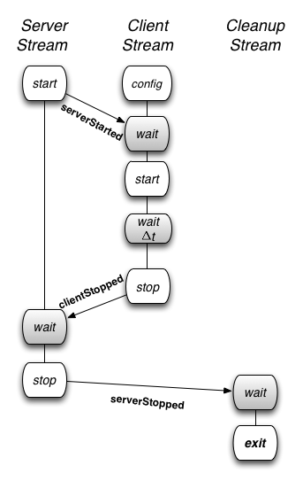
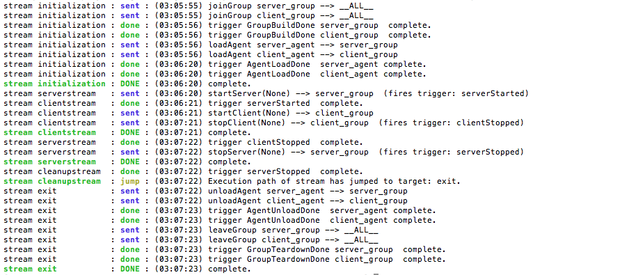
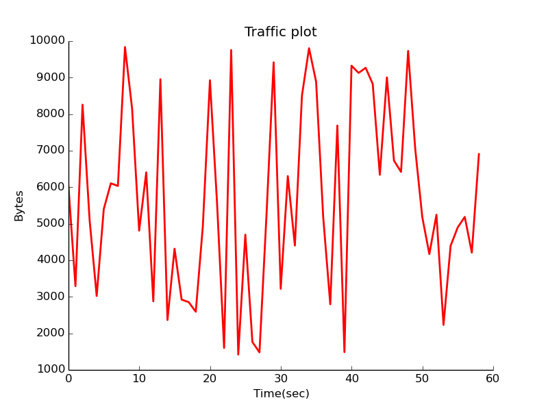

In this example, we demonstrate how to set up client and server traffic generators with only one server and one client. (In the Scaled Server Case Study, we will show how the same procedure can be used for a significantly larger topology.)
We demonstrate three aspects of MAGI: specifying multiple event streams, synchronizing with triggers, and a special target called exit to unload agents.
Event Streams
This example has three events streams; the server stream, the client stream, and the cleanup stream.
The coordination between the events can be illustrated as follows:

Event streams can be synchronized using event-based triggers (such as after the server has started) or time-based triggers (such as wait for 30 seconds). The triggers are indicated as wait states (in gray). Forming the groups and loading the agents, which are also automated by the orchestrator tool, are not illustrated above.
Server Stream
The server event stream consists of three states.
-
The start state generates a trigger, called
serverStarted, once the server agent is activated on the experiment nodes. -
It then enters the wait state where it waits for a trigger from the client event stream.
-
Once the trigger is received, it enters the stop state, when the server is deactivated or terminated.
Here is the relevant AAL description:
serverstream:
- type: event
agent: server_agent
method: startServer
trigger: serverStarted
args: {}
- type: trigger
triggers: [ {event: ClientStopped} ]
- type: event
agent: server_agent
method: stopServer
trigger: ServerStopped
args: {}
Client Stream
The client event stream consists of five states.
- First, the client agent implementation is parameterized by the configuration state. This occurs as part of the agent loading process.
- The client stream then synchronizes with the server stream by waiting for the
serverStartedtrigger from the server nodes. - Once it receives the trigger, the client agent is activated in the start state.
- Next, the client stream waits for a period of time and then terminates the client agents in the stop state.
- On termination, the client agents send a
clientStoppedtrigger that allows the server stream to synchronize and terminate the servers only after all the client have terminated.
Here is the relevant AAL description:
clientstream:
- type: trigger
triggers: [ {event: ServerStarted} ]
- type: event
agent: client_agent
method: startClient
args: {}
- type: trigger
triggers: [ {timeout: 60000} ]
- type: event
agent: client_agent
method: stopClient
trigger: clientStopped
args: {}
Cleanup Stream
The last event stream, the cleanup stream consists of two states.
- First, it waits for all the servers to stop.
- Then it enters the exit state.
The exit state unloads and tears down all the communication mechanisms between the agents. The exit state is entered by the key target and is used to transfer control to a reserved state internal to the Orchestrator.
It causes the Orchestrator to send agent unload and disband group messages to all of the experiment nodes and then it exits the Orchestrator.
Here is the relevant AAL code:
cleanup:
- type: trigger
triggers: [ {event: ServerStopped, target: exit} ]
Running the Experiment
Step 1: Swap in the experiment
Swap in the experiment using this network description file: casestudy_clientserver.tcl.
Step 2: Set up your environment
Assuming your experiment is named myExp, your project is named myProj, and the AAL file is called casestudy_clientserver.aal, include this in your environment:
PROJ=myExp
EXP=myProj
AAL=casestudy_clientserver.aal
Step 3: Run the Orchestrator
Once the experiment is swapped in, run the Orchestrator using this AAL file: casestudy_clientserver.aal.
> /share/magi/current/magi_orchestrator.py --experiment $EXP --project $PROJ --events $AAL
Once run, you will see the orchestrator step through the events in the AAL file. The example output below uses the project montage with experiment caseClientServer. The output will be as follows:

- The Orchestrator runs an internally defined stream called
initilizationthat is responsible for establishing theserver_groupand theclient_groupand loading the agents. Once the agents are loaded, as indicated by the received triggerAgentLoadDone, the initialization stream is complete. - Now the
serverstream,clientstreamand thecleanupstream start concurrently. Theserverstreamsends thestartServerevent to theserver_group. All members of theserver_groupstart the server and fire a triggerserverStarted. - The
clientstreamthen sends thestartClientevent to the client_group. One minute later, theclientstreamsends the eventstopClientto the client_group and terminates theclientstream. All members of the client_group terminate the client_agent and generate aclientStoppedtrigger which is sent back to the Orchestrator. - Once the
serverstreamreceives theclientStoppedtrigger from the client_group, it sends out thestopServerevent on the server_group. Once all the servers are stopped, the members of the server_group respond with aserverStoppedtrigger, which is forwarded to thecleanupstream. - Upon receiving the
serverStoppedtrigger, thecleanupstreamenacts an internally define stream calledexitthat is responsible for unloading agents and tearing down the groups.
The experiment artifacts, the procedure and topology file that were used for the case study are attached below.
- Procedure: casestudy_clientserver.aal
- Topology: casestudy_clientserver.tcl
- Archived Logs: casestudy_clientserver.tar.gz
Visualizing Experiment Results
In order to visualize the traffic on the network, modify the above-mentioned procedure to add another stream called monitorstream. This stream deploys a packet sensor agent on the server node to measure the traffic on the link in the experiment. The packet sensor agent records the traffic data using MAGI’s data management layer.
monitor_group: [servernode]
monitor_agent:
group: monitor_group
path: /share/magi/modules/pktcounters/pktCountersAgent.tar.gz
execargs: {}
monitorstream:
- type: trigger
triggers: [ { event: serverStarted } ]
- type: event
agent: monitor_agent
method: startCollection
trigger: collectionServer
args: {}
- type: trigger
triggers: [ { event: clientStopped } ]
- type: event
agent: monitor_agent
method: stopCollection
args: {}
The recorded data is then pulled out by the [below mentioned] tools to create a traffic plot.
In order to populate the traffic data, re-run the experiment using the updated procedure file: casestudy_clientserver_monitor.aal. The corresponding logs are also available here.
The traffic may then be plotted in two ways:
Offline Plotting
A plot of the traffic on the link connecting the client and the server can be generated by the MAGI Graph Creation Tool.
> GRAPHCONF=cs_magi_graph.conf
> /share/magi/current/magi_graph.py -e $EXP -p $PROJ -c $GRAPHCONF -o cs_traffic_plot.png

Real-time Plotting
A real time simulated traffic plot using canned data from a pre-run experiment may be visualized here.
A similar plot using live data may be plotted by visiting the same web page and additionally passing it the hostname of the database config node of your experiment.
You can find the database config node for your experiment by reading your experiment’s configuration file, similar to the following.
> cat /proj/myProject/exp/myExperiment/experiment.conf
The database config node is as follows:
dbdl:
configHost: node-1
expdl:
experimentName: myExperiment
projectName: myProject
Then edit the simulated traffic plot URL, passing it the hostname.
host=node-1.myExperiment.myProject
http://<web-host>/traffic.html?host=node-1.myExperiment.myProject
The procedure, graph configuration, and archived log files that were used for the visualization of this case study are attached below.
- Procedure: casestudy_clientserver_monitor.aal
- Archived Logs: casestudy_clientserver_monitor.tar.gz
- Graph Config: cs_magi_graph.conf
Scaling the Experiment
Now suppose you wanted to generate web traffic for a larger topology. We discuss how the above AAL can be applied to a topology of 55 nodes in the next tutorial.